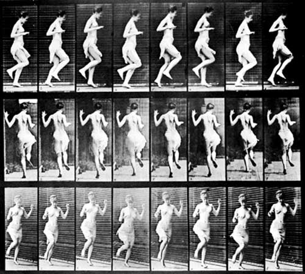
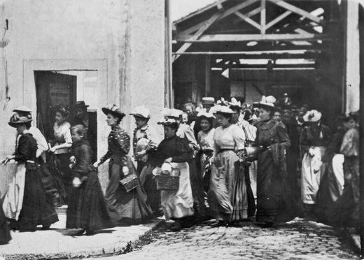

El cine (abreviatura de cinematógrafo o cinematografía) es la técnica y arte de proyectar fotogramas de forma rápida y sucesiva para crear la impresión de movimiento, mostrando algún vídeo (o de película, o film, o filme). La palabra «cine» designa también las salas de cine o sala de proyecciones en los cuales se proyectan las películas.
Etimológicamente, la palabra «cinematografía» fue un neologismo creado a finales del siglo XIX compuesto a partir de dos palabras griegas. Por un lado κινή (kiné), que significa «movimiento» (ver, entre otras, «cinético», «cinética», «kinesis», «cineteca»); y por otro de γραφóς (grafós). Con ello se intentaba definir el concepto de «imagen en movimiento».
Como forma de narrar historias o acontecimientos, el cine es un arte, y comúnmente, considerando las seis artes del mundo clásico, se lo denomina séptimo arte. No obstante, debido a la diversidad de películas y a la libertad de creación, es difícil definir lo que es el cine hoy. Sin embargo, las creaciones cinematográficas que se ocupan de la narrativa, montaje, guionismo, y que en la mayoría de los casos consideran al director como el verdadero autor, son consideradas manifestaciones artísticas, o cine arte (cine de arte). Por otra parte, a la creación documental o periodística se la clasifica según su género. A pesar de esto, y por la participación en documentales y filmes periodísticos de personal con visión propia, única y posiblemente artística (directores, fotógrafos y camarógrafos, entre otros), es muy difícil delimitar la calidad artística de una producción cinematográfica.
La industria cinematográfica se ha convertido en un negocio importante en lugares como Hollywood (California, Estados Unidos) y Bombay (la India), informalmente «Bollywood».
La historia del cine comenzó el 28 de diciembre de 1895, cuando los hermanos Lumière proyectaron públicamente la salida de obreros de una fábrica francesa en Lyon, la demolición de un muro, la llegada de un tren y un barco saliendo del puerto.
El éxito de este invento fue inmediato, no solo en Francia, sino también en toda Europa y América del Norte, donde Tomas Edison ya había grabado numerosas escenas que un espectador a la vez podía ver a través de un kinetoscopio. En un año, los hermanos Lumière crearon más de 500 películas, marcadas por la ausencia de actores y los decorados naturales, la brevedad, la ausencia de montaje y la posición fija de la cámara. Sin embargo, fue George Méliès quien inventó el espectáculo cinematográfico, en contraste con el tono documental de los Lumière. Con historias y decorados fantásticos, como "Fausto" y "Barba Azul" (1901), desarrolló las nuevas técnicas cinematográficas, sobre todo con Viaje a la luna (1902) y con Viaje a través de lo imposible (1904), aplicando la técnica teatral ante la cámara y creando los primeros efectos especiales y la ciencia-ficción filmada.
A partir de entonces, la cinematografía no hizo más que mejorar y surgieron grandes directores como Murnau, Erich von Stroheim y Charles Chaplin. En Estados Unidos se hicieron películas de aventuras, como las de Douglas Fairbanks y dramas románticos como las de Valentino. Sin embargo las de mayor belleza fueron fruto de la escuela cómica americana nacida a partir de la comedia de Mack Sennett, basada en slapsticks y en la estereotipación de figuras sociales como el policía o el gordo, el avaro y el bigotudo burgués. Aquí recordemos especialmente a Buster Keaton y a Charles Chaplin. En 1927, se estrenó la primera película con sonido El cantante de jazz, a partir de la cual el cine tal y como se conocía dejó de existir y de un lenguaje en que primaba la expresividad de segmentos que se contrastaban y juntaban se impuso una mayor continuidad del relato y mayor fluidez argumental. Ese mismo año apareció el doblaje.
En 1935 se filmó en Technicolor La feria de la vanidad (Becky Sharp), de Rouben Mamoulian; aunque artísticamente el color consiguió su máxima plenitud con Lo que el viento se llevó (1939).
El 2 de febrero de 2000 en París, Philippe Binant realizó la primera proyección de cine numérico público de Europa, fundada sobre la aplicación de un MEMS (DLP CINEMA) desarrollado por Texas Instruments.